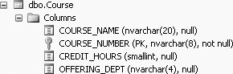
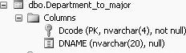
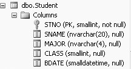
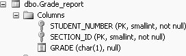
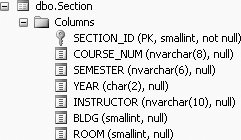

8.4. More Examples Involving Joins and INThe purpose of this section is to further demonstrate several queries that will and will not allow the use of the subquery. As we have discussed, some joins can be expressed as subqueries whereas others cannot. Further, all subqueries with the IN predicate can be re-formed as a join. Whether you can use a subquery depends on the final, outer result set. Some more examples will help clarify this point. 8.4.1. Example 1Find the names of all the departments that offer a course with INTRO in the title. To formulate our query, we need to use the Course table (to find the course names) and the Department_to_major table (to find the names of the departments). Begin by viewing the column names in the tables.
Figure 8-1 gives the column names in the Course table: Figure 8-1. Column names of the Course tableFigure 8-2 gives the column names of the Department_to_major table: Figure 8-2. Column names of the Department_to_major tableOur query needs a department name (dname) from the Department_to_major table. We also need course information from the Course table, because our query depends on a course name; however, no course information appears in the result set. We did not ask for the names of the courses, just that they have INTRO in the title. The result set asks only for department names. We can find this result by using a subquery, with the Department_to_major table as the outer query, because all the information in the result set is contained in the outer query. The query would be as follows:
SELECT d2m.dname
FROM Department_to_major d2m
WHERE d2m.dcode
IN (SELECT Course.offering_dept
FROM Course
WHERE Course.course_name LIKE '%INTRO%')
which produces the following output:
dname
--------------------
Computer Science
Political Science
Chemistry
(3 row(s) affected)
8.4.2. Example 2List the student name, student major code, and section identifier of students who earned Cs in courses taught by Professor Hermano (HERMANO). First, we determine which tables are needed. We want to find the student name and major code, and a section identifier for courses taken, so we need the Student and Grade_report tables for the result set. We will need to use the Section table for a filter. The instructor does not appear in the result set. Again, it is a good idea to look at the column names in each of the tables first. Figure 8-3 gives the column names of the Student table. Figure 8-3. Columns names of the Student tableFigure 8-4 gives the column names of the Grade_report table. Figure 8-4. Column names of the Grade_report tableFigure 8-5 gives the column names of the Section table. After we have determined which tables we need, we have to determine where the columns that are needed in the result set are located. We need to get the names and major codes from the Student table, and the section identifiers from the Grade_report table. So the result set part of the query (the outer query) must contain the Student and Grade_report tables. The rest of the query can contain any other tables that we need to locate the columns. The resulting query may look like this (a combination of a join and a subquery): Figure 8-5. Column names of the Section table
SELECT s.sname, s.major, g.section_id
FROM Student s, Grade_report g
WHERE g.student_number = s.stno
AND g.grade = 'C'
AND g.section_id IN
(SELECT t.section_id
FROM Section t
WHERE t.instructor LIKE 'HERMANO')
which produces the following output:
sname major section_id
-------------------- ----- ----------
Richard ENGL 126
(1 row(s) affected)
The previous query could also have been done as a three-table join, as follows:
SELECT s.sname, s.major, t.section_id
FROM Student s, Grade_report g, Section t
WHERE s.stno = g.student_number
AND g.section_id =t.section_id
AND g.grade='C'
AND t.instructor LIKE 'HERMANO'
8.4.3. Example 3List the name and major code of students who earned Cs in courses taught by Professor King (KING). Again, we first need to determine which tables are needed. We need to collect student names and major codes in the result set and we need the Grade_report and Section tables for filtering conditions. (You viewed the columns available in each of these tables in the preceding example.) Next, we need to determine where the columns that are needed in the result set are located. In this example, they are all in the Student table. Because the only table needed in the outer query is the Student table, we can structure the query in any of the following ways:
Each of these queries produces the same result set with different efficiencies. We'll study them further in the exercises at the end of the chapter. |